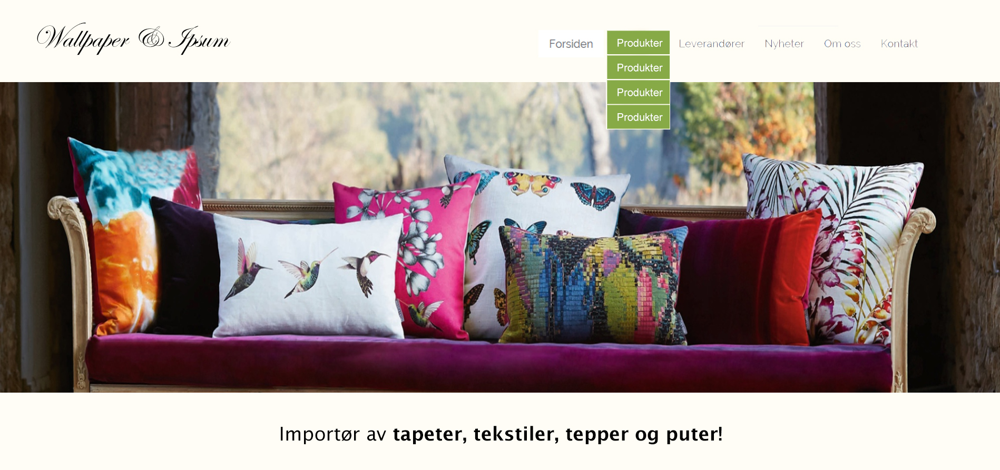
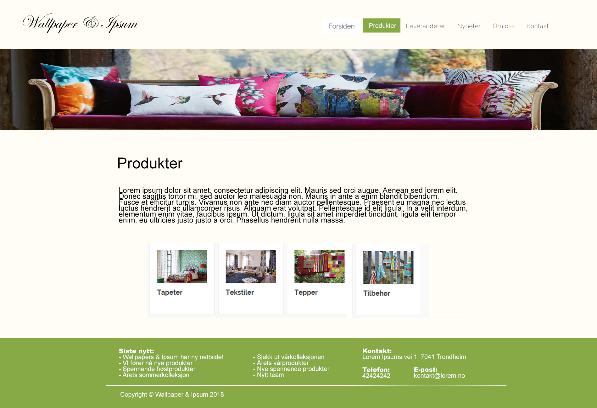
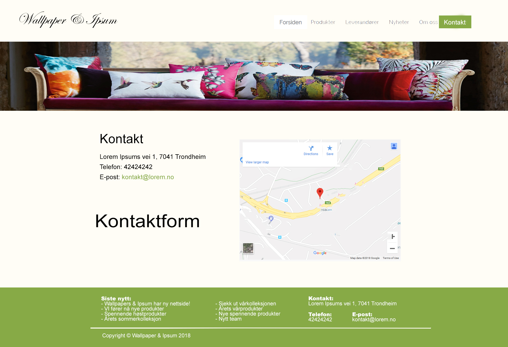

Link til siden
Link til github
Endringer i design
Generelle endringer
Fra P2 til P3 ble vi et medlem mindre, så da måtte vi gjøre en del justeringer. For dette prosjektet valgte vi å fjerne unødvendige elementer fra forrige iterasjon. Elementer slik som undersider til leverandører og dropdown, er fjernet. Nye elementer slik som parallakse bilde scrolling er lagt til. Navbaren og footeren har også fått en ryddigere look.
Media queries og scaling
Ettersom det ikke var et krav å ha mobil optimalisert side har vi optimalisert den til å passe det vi antar som normale breakpoints for CSS media queries. Dvs. at vårt siste breakpoint check er på rundt 400px (som er rundt vanlig portrettmodus på mobiler).
Hjemmesiden
- Gammelt design:

Vi tok utgangspunktet i mockupen vår og laget en forside som i utgangspunktet var estetisk satt opp. For å gjøre siden mer interaktiv har vi laget en parallakse effekt når du scroller på bildene der du får info om produkter og leverandører.
- Resultat

Når man blar litt nedover vil det komme en parallakse effekt.

Og nedover...

Vi tok bort dropdown ved hovering, og heller har scaling dropdown meny, når vinduet til nettleseren blir tilstrekkelig liten nok.
- Gammelt design:
- Nytt design:

Produkter og Leverandør sidene
- Gammelt design:
- Nye design:
Vi valgte å fjerne det øverste bildet av estetiske årsaker.

Produktsiden er nå lettere å navigere seg rundt i. Hvert bilde kan man klikke seg inn på for å lese mer. Navbaren og footer har nå også et hint av skygge for å få en mer modularitetslook.
Footeren er også mer kompakt og mer leselig, vi valgte å fjerne siste nytt fra footeren da det hadde vært mye tekst. Istedenfor kan brukeren nå registrere seg på nyhetsbrevet.

Klikker man seg inn på en underside av et produkt får man mer info om produktet samt en knapp øverst til venstre for å ta deg tilbake.

Vi valgte å fjerne undersider til leverandørene og heller ha alt samlet, der du kan lese litt om hver leverandør og klikke deg inn på hjemmesdene deres. På denne måten ble mer oversiktlig og lettere å se på.
Kontakt oss
Gammelt design:
Nytt design:

Vi har fått på plass et google map som ligger sentralt for brukeren med adresse. Siden er nå lagt opp slik at brukeren lett kan hente fram informasjon.

På samme side har vi også forms som brukeren kan fylle ut for å kontakte oss
Nyheter

Vi har også fått på plass en side for nyhetene til nettsiden